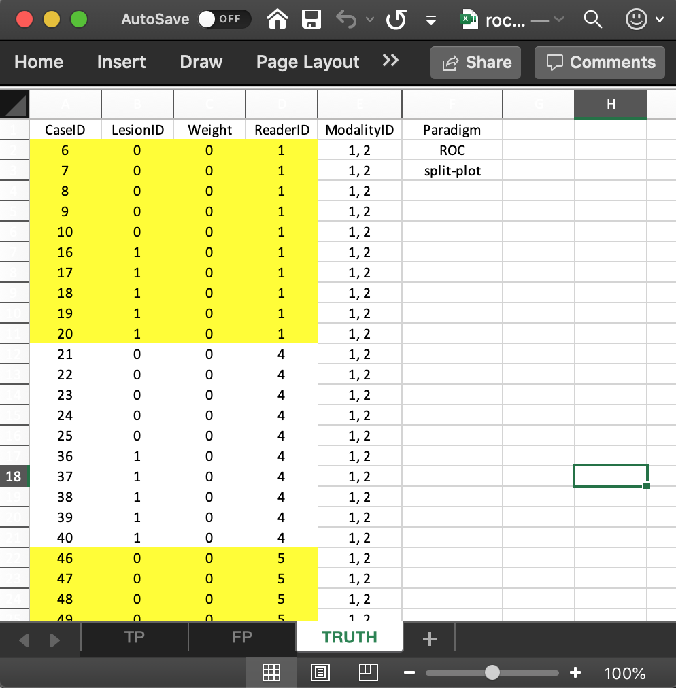
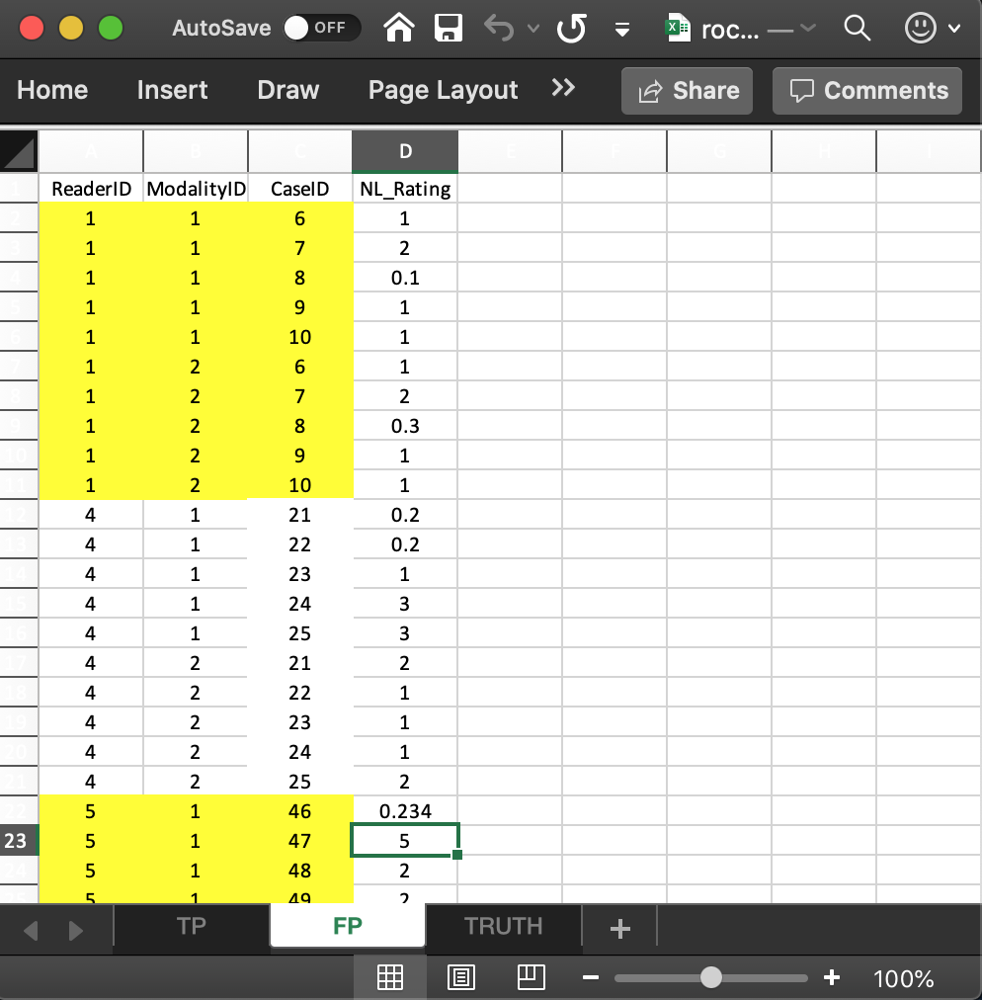

Chapter 00, Vignette 3: JAFROC Excel file data format: ROC SPLIT-PLOT
Dev P. Chakraborty, PhD
2020-06-26
Ch00Vig3DataFormatRocSp.RmdIntroduction
- The purpose of this vignette is to explain the data format of the input Excel file for an ROC split-plot dataset.
- In a split-plot dataset each reader interprets a sub-set of cases in all modalities.
- The cases interpreted by different readers have no overlap.
- It is assumed, for now, that each sub-set of cases has the same numbers of non-diseased and diseased cases.
The Truth worksheet
The Truth worksheet contains 6 columns: CaseID, LesionID, Weight, ReaderID, ModalityID and Paradigm.
- The first five columns contain as many rows as there are cases in the dataset.
-
CaseID: unique integers, one per case, representing the cases in the dataset. -
LesionID: integers 0, representing non-diseased cases and 1 representing the diseased cases. - The non-diseased cases interpreted by reader with
ReaderIDvalue1are labeled6,7,8,9and10, each withLesionIDvalue0, while the diseased cases interpreted by this reader are labeled16,17,18,19and20, each withLesionIDvalue1. Note that theReaderIDfor the above cases has the single value1, unlike the crossed design where all readers interpret all cases. - The second reader, with
ReaderIDvalue4, interprets five non-diseased cases labeled21,22,23,24and25, each withLesionIDvalue0, and five diseased cases labeled36,37,38,39and40, each withLesionIDvalue1.
- The third reader, with ReaderID value
5, interprets five non-diseased cases labeled46,47,48,49and50, each withLesionIDvalue0and five diseased cases labeled51,52,53,54and55, each withLesionIDvalue1.
-
Weight: floating point value 0 - this is not used for ROC data.
-
ModalityID: a comma-separated listing of modalities, each represented by a unique integer. In the example shown below each cell has the value1, 2. Each cell has to be text formatted. -
Paradigm: In the example shown below, the contents areROCandsplit-plot.

The structure of the ROC split plot dataset
The example shown above corresponds to Excel file inst/extdata/toyFiles/ROC/rocSp.xlsx in the project directory.
rocSp <- system.file("extdata", "toyFiles/ROC/rocSp.xlsx", package = "RJafroc", mustWork = TRUE) x <- DfReadDataFile(rocSp, newExcelFileFormat = TRUE) str(x) #> List of 3 #> $ ratings :List of 3 #> ..$ NL : num [1:2, 1:3, 1:30, 1] 1 1 -Inf -Inf -Inf ... #> ..$ LL : num [1:2, 1:3, 1:15, 1] 5 2.3 -Inf -Inf -Inf ... #> ..$ LL_IL: logi NA #> $ lesions :List of 3 #> ..$ perCase: int [1:15] 1 1 1 1 1 1 1 1 1 1 ... #> ..$ IDs : num [1:15, 1] 1 1 1 1 1 1 1 1 1 1 ... #> ..$ weights: num [1:15, 1] 1 1 1 1 1 1 1 1 1 1 ... #> $ descriptions:List of 7 #> ..$ fileName : logi NA #> ..$ type : chr "ROC" #> ..$ name : logi NA #> ..$ truthTableStr: num [1:2, 1:3, 1:30, 1:2] 1 1 NA NA NA NA 1 1 NA NA ... #> ..$ design : chr "SPLIT-PLOT" #> ..$ modalityID : Named chr [1:2] "1" "2" #> .. ..- attr(*, "names")= chr [1:2] "1" "2" #> ..$ readerID : Named chr [1:3] "1" "4" "5" #> .. ..- attr(*, "names")= chr [1:3] "1" "4" "5"
- Flag
newExcelFileFormatmust be set toTRUEfor split plot data. - The dataset object
xis alistvariable with 3 members. - There are 15 diseased cases in the dataset (the number of 1’s in the
LesionIDcolumn of theTruthworksheet) and 15 non-diseased cases (the number of 0’s in theLesionIDcolumn). -
x$NL, with dimension [2, 3, 30, 1], contains the ratings of normal cases. The extra values in the third dimension, filled withNAs, are needed for compatibility with FROC datasets. -
x$LL, with dimension [2, 3, 15, 1], contains the ratings of abnormal cases. - The
x$lesionVectormember is a vector with 15 ones representing the 15 diseased cases in the dataset. - The
x$lesionIDmember is an array with 15 ones (this member is needed for compatibility with FROC datasets). - The
x$lesionWeightmember is an array with 15 ones (this member is needed for compatibility with FROC datasets). - The
dataTypemember is which specifies the data collection method (“ROC”, “FROC”, “LROC” or “ROI”). - The
x$modalityIDmember is a vector with two elements"1"and"2", naming the two modalities. - The
x$readerIDmember is a vector with three elements"1","4"and"5", naming the three modalities. - The
x$designmember is ; specifies the dataset design, which can be either “CROSSED” or “SPLIT-PLOT”. - The
x$normalCasesmember lists the names of the normal cases, . - The
x$abnormalCasesmember lists the names of the abnormal cases, . - The
x$truthTableStrmember quantifies the structure of the dataset, as explained next. It is used in theDfReadDataFile()function to check for data entry errors.
The truthTableStr member
- This is a
2 x 3 x 30 x 2array, i.e., I x J x K x (maximum number of lesions per case plus 1). Theplus 1is needed to accommodate normal cases withlesionID= 0. - Each entry in this array is either
1, meaning the corresponding interpretation exists, orNA, meaning the corresponding interpretation does not exist. - For example,
x$truthTableStr[1,1,1,1]is . This means that an interpretation exists for the first treatment (modalityID= 1), first reader (readerID= 1) and first (normal) case (caseID= 6 andlesionID= 0). This example corresponds to row 2 in theTRUTHworksheet. - The following shows that the first reader interprets the first five normal cases in both modalities.
x$truthTableStr[,1,1:15,1] #> NULL
- In the following all elements are
NAbecause normal cases correspond to lesionID = 1.
x$truthTableStr[,1,1:15,2] #> NULL
- The following shows that the second reader interprets the next group of five normal cases, indexed 6 through 10, in both modalities.
x$truthTableStr[,2,1:15,1] #> NULL
- The following shows that the third reader interprets the next group of five normal cases, indexed 11 through 15, in both modalities.
x$truthTableStr[,3,1:15,1] #> NULL
- The following shows that the first reader interprets the first group of five abnormal cases, indexed 16 through 20, in both modalities.
x$truthTableStr[,1,16:30,2] #> NULL
- In the following all elements are
NAbecause abnormal cases correspond tolesionID= 2.
x$truthTableStr[,1,16:30,1] #> NULL
The false positive (FP) ratings
These are found in the FP or NL worksheet, see below. 
- This worksheet has the ratings of non-diseased cases.
- The common vertical length is 30 in this example (2 modalities times 3 readers times 5 non-diseased cases per reader).
-
ReaderID: the reader labels: these must be from1,4or5, as declared in theTruthworksheet. -
ModalityID: the modality labels:1or2, as declared in theTruthworksheet. -
CaseID: the labels of non-diseased cases. EachCaseID-ReaderIDcombination must be consistent with that declared in theTruthworsheet.
-
NL_Rating: the floating point ratings of non-diseased cases. Each row of this worksheet yields a rating corresponding to the values ofReaderID,ModalityIDandCaseIDfor that row.
x$NL[,1,1:15,1] #> NULL x$NL[,2,1:15,1] #> NULL x$NL[,3,1:15,1] #> NULL
- The first line of the above code shows the ratings, in both modalities, of the first five non-diseased cases with
CaseIDs6,7,8,9,10(indexed 1, 2, 3, 4, 5 and appearing in the first five columns) interpreted by the first reader (ReaderID1). - The second line shows the ratings, in both modalities, of the next five non-diseased cases with
CaseIDs21,22,23,24,25(indexed 6, 7, 8, 9, 10and appearing in the next five columns) interpreted by the second reader (ReaderID4). - The third line shows the ratings, in both modalities, of the final five non-diseased cases with
CaseIDs46,47,48,49,50(indexed 11, 12, 13, 14, 15and appearing in the final five columns) interpreted by the third reader (ReaderID5). - Values such as
x$NL[,,16:30,1], which are there for compatibility with FROC data, are all filled with-Inf.
The true positive (TP) ratings
These are found in the TP or LL worksheet, see below.

- This worksheet has the ratings of diseased cases.
- The common vertical length is 30 in this example (2 modalities times 3 readers times 5 diseased cases per reader).
-
ReaderID: the reader labels: these must be from1,4or5, as declared in theTruthworksheet. -
ModalityID: the modality labels:1or2, as declared in theTruthworksheet. -
CaseID: the labels of diseased cases. EachCaseID-ReaderIDcombination must be consistent with that declared in theTruthworsheet.
-
LL_Rating: the floating point ratings of diseased cases. Each row of this worksheet yields a rating corresponding to the values ofReaderID,ModalityIDandCaseIDfor that row.
x$LL[,1,1:15,1] #> NULL x$LL[,2,1:15,1] #> NULL x$LL[,3,1:15,1] #> NULL
- The first line of code shows the ratings, in both modalities, of the first five diseased cases with
CaseIDs16,17,18,19,20(indexed 1, 2, 3, 4, 5and appearing in the first five columns) interpreted by the first reader (ReaderID1). - The second line shows the ratings, in both modalities, of the next five diseased cases with
CaseIDs36,37,38,39,40(indexed 6, 7, 8, 9, 10and appearing in the next five columns) interpreted by the second reader (ReaderID4). - The third line shows the ratings, in both modalities, of the final five non-diseased cases with
CaseIDs51,52,53,54,55(indexed 11, 12, 13, 14, 15and appearing in the final five columns) interpreted by the third reader (ReaderID5).
Summary
- The FROC dataset has far less regularity in structure as compared to an ROC dataset.
- The length of the first dimension of either
x$NLorx$LLlist members is the total number of modalities, 2 in the current example. - The length of the second dimension of either
x$NLorx$LLlist members is the total number of readers, 3 in the current example. - The length of the third dimension of
x$NLis the total number of cases, 8 in the current example. The first three positions account forNLmarks on non-diseased cases and the remaining 5 positions account forNLmarks on diseased cases. - The length of the third dimension of
x$LLis the total number of diseased cases, 5 in the current example. - The length of the fourth dimension of
x$NLis determined by the case (diseased or non-diseased) with the mostNLmarks, 2 in the current example. - The length of the fourth dimension of
x$LLis determined by the diseased case with the most lesions, 3 in the current example.